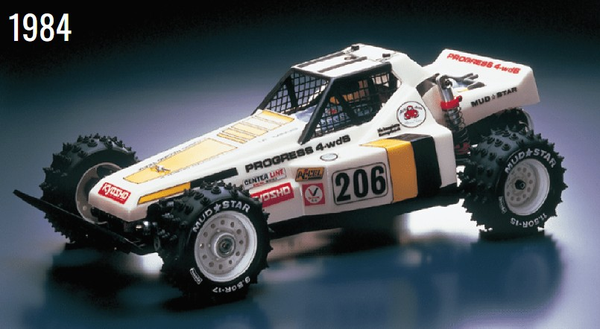

京商 プログレス4WDS

引用元画像：ビンテージRCコミュニティ
📋 基本情報
| メーカー | 京商（Kyosho） |
|---|---|
| 機種名 | プログレス4WDS（Progress 4WDS） |
| シャーシ略称 | プログレス4WDS |
| 型番 | 3067（初期型番） |
| 発売時期 | 1984年 |
| 価格 | ¥19,800（当時価格） |
| 生産状況 | 生産終了（絶版） |
| カテゴリー | ラジコンカー（1/10スケール 電動RCカー） |
| サブカテゴリー | 4WDレーシングバギー（4輪駆動・4輪操舵） |
| シリーズ | 京商初の4輪操舵機構搭載モデル |
📏 シャーシスペック
| 全長 | 約405mm |
|---|---|
| 全幅 | 約231mm |
| 全高 | 約145mm |
| ホイールベース | 詳細不明 |
| トレッド | 詳細不明 |
| フレーム | アルミ製ハシゴ型シャシー |
| 全備重量 | 詳細不明（4WS機構のため他のバギーより重め） |
⚙️ 駆動系
| 駆動方式 | チェーンドライブ4WD（ラダーチェーン方式） |
|---|---|
| チェーン方式 | 前輪駆動用ラダーチェーンが車軸速度で前方へ伸びる ※ファントムEPで実績のある方式 |
| ワンウェイクラッチ | フロントに標準装備 ※加速時のみ前輪駆動、減速時は後輪ブレーキのみ |
| ギヤボックス | 鋳造アルミ製 ※最終減速ギヤのみ収納、中間減速ギヤはプラスチックカバー下 |
| モーター配置 | リアオーバーハング |
| モーター | ル・マン360PT（当時の標準モーター） |
| スピードコントローラー | 3段機械式スピードコントローラー ※プリント基板式（通称「スポットウェルダースペシャル」） ※セラミック抵抗2個で3速制御（低速：両方/中速：1個/高速：バイパス） |
🔧 サスペンション
| フロント形式 | ダブルウィッシュボーン + モノショック + トーションバー |
|---|---|
| リア形式 | ダブルトレーリングアーム + 左右独立オイルダンパー + コイルスプリング |
| フロントダンパー | 左右共用モノダンパー（初期RCカーで多用された方式） |
| リアダンパー | 左右独立オイルダンパー |
| サスアーム | 短めのアーム設計（ストローク制限あり） |
| 特徴 | フロントサスペンションは複雑な構造 |
🎯 4輪操舵（4WS）システム
| 操舵方式 | 4輪操舵（4 Wheel Steering） |
|---|---|
| ステアリング位相 | 後輪は前輪と逆位相のみ（カウンターステア） |
| 後輪操舵角 | 前輪の約25%（数度程度） |
| サーボ数 | 2個（上：ステアリング / 下：3段スピードコントローラー） |
| ステアリング特性 | 低速時は非常にクイックなターン性能 ※競技走行では神経質な挙動のため後輪ロックされることが多い |
💡 特徴
京商初の4WD + 4WS（4輪駆動 + 4輪操舵）バギー
- 1984年発売、京商の実験的野心作
- 4輪駆動＋4輪操舵という当時としては革新的な機構
- 「京商版アバンテ」とも呼ばれる複雑なメカニズム
- フロントワンウェイクラッチで加速時の前輪駆動を最適化
革新的だが複雑な設計
- チェーンドライブ4WD（ファントムEP系譜）
- 前輪駆動用ラダーチェーンは非常に細く伸びやすい
- 4WS機構により小回り性能は優秀だが重量増
- 多数のリンクが外れやすい構造
- バッテリー配置は横置き＋高位置でハンドリングに不利
サスペンションの特徴
- フロントモノダンパー（初期RCカーの特徴、性能は限定的）
- リアダブルトレーリングアームは路面追従性良好
- フロントアームは短くストローク不足
- 初期京商オイルダンパーは漏れやすい
機械式スピードコントローラー
- 3段機械式MSC（プリント基板式）
- 通称「スポットウェルダースペシャル」（接点溶着や過熱の傾向）
- セラミック抵抗2個で3速制御
- オイル漏れでギヤボックス周辺が汚れやすい
歴史的評価
- アイデアは革新的だったが、実用性には課題
- 京商がのちに「オプティマ」で大成功を収める前の試行錯誤
- RCカー史における実験的ランドマークモデル
- コレクターズアイテムとしての価値が高い
🔧 ぽすとそに工房での修理実績
修理難易度
★★★★★（非常に難しい）
パーツが絶版のため、難易度はかなり高くなります。構造は実にわかりやすいのですが、入手困難という点につきます。
よくある故障・注意点
- ラダーチェーン伸び - 細いチェーンが伸びて前輪駆動ロス
- 4WSリンク外れ - 多数のリンクが衝撃で外れやすい
- オイル漏れ - 初期京商ダンパーは漏れやすい
- MSC過熱・焼損 - 機械式スピードコントローラーの接点トラブル
- ワンウェイクラッチ分解困難 - 再組立が難しい
修理のポイント
- 交換パーツは絶版のため入手困難（ヤフオク、海外RCフォーラムなど）
- タイヤは特殊サイズのため代替品を探す必要あり
- ボールベアリング化で動作改善（初期は真鍮ブッシュ）
- 現代ESCへの換装推奨（機械式MSCは信頼性低い）
- 4WS機構は競技走行時にロック推奨（神経質な挙動）
その他の特徴
- コレクターズアイテムとして保存推奨
- 実走よりも観賞用・展示用に適している
- 同時期のギャロップ4WDSと部品共用
- 京商の技術的挑戦を象徴するモデル